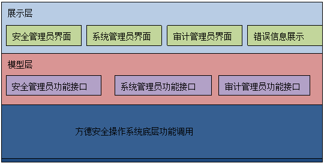
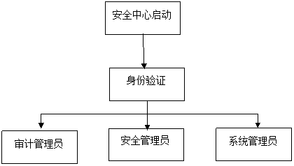
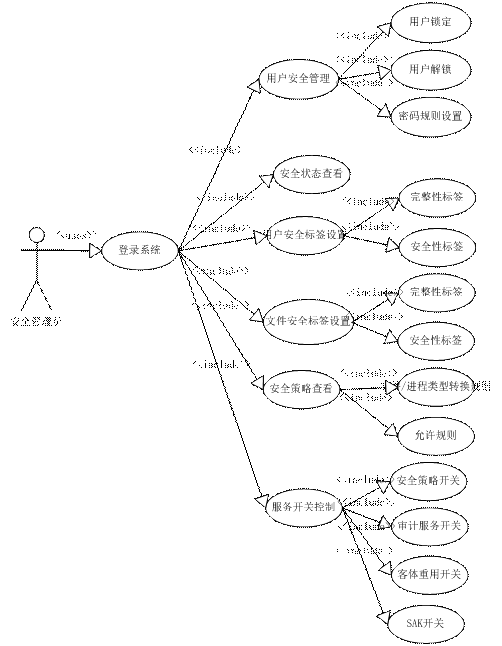
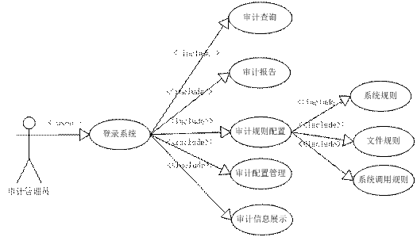

安全操作系统
概要设计说明书
安全服务器团队 北京市海淀区中关村南四街4号 100190 2010年11月
目录
1 引言
1.1
编写目的
本文档提供安全操作系统的概要设计报告，概要描述系统总体设计思路、主要功能的设计实现方法、系统各功能模块之间的关联关系，作为系统各功能进一步设计实现、系统集成的依据，为安全服务器操作系统的开发和测试人员提供参考文档和相关依据。
本文读者为安全服务器操作系统全体开发成员、测试人员、配置管理人员、质量保证人员。
1.2
项目背景
本项目中，将研发“安全等级达到GB/T 20272操作系统安全技术要求第三级（安全标记保护级）”的安全操作系统作为重要指标，同时结合电科院的测试用例作为并列指标，开发出保证安全性并兼顾可用性的服务器安全操作系统产品
1.3
缩写词
表格 1 缩写词列表
|
缩写词 |
英文名称 |
中文名称 |
|
PAM |
Pluggable Authentication Modules |
可插拔认证模块 |
|
ACL |
Access Control
List |
访问控制列表 |
|
DAC |
Discretionary Access Control |
自主访问控制 |
|
DTE |
Domain and Type Enforcement |
域和型裁决 |
|
Flask |
Flux Advanced Security Kernel |
Flux高级安全内核 |
|
IBAC |
Identity Based Access Control |
基于身份的访问控制 |
|
MAC |
Mandatory Access Control |
强制访问控制 |
|
MLS |
Multilevel Security |
多级安全 |
|
RBAC |
Role Based Access Control |
基于角色的访问控制 |
|
TE |
Type Enforcement |
型裁决 |
|
SELinux |
Security EnhancedLinux |
安全增强的Linux |
|
SSOOS |
Security subsystem of operating system |
操作系统安全子系统 |
|
SSP |
SSOOS security policy |
SSOOS安全策略 |
|
SSF |
SSOOS security function |
SSOOS安全功能 |
|
SSC |
SSOOS scope of control |
SSF控制范围 |
2 需求概述
2.1
系统需求描述
本系统的设计需求主要来源于三个方面：首先，系统需要符合GB/T20272安全标记保护级安全操作系统的要求；其次，作为一个安全服务器操作系统，在市场方面结合电科院的测试用例要求；第三，作为服务器线的一个分支，在前两项需求满足的前提，应尽量保持安全子系统与其他操作系统系列版本的兼容性。
2.2
对标分析
2.2.1
安全管理中心
2.2.1.1
系统管理
根据标准描述，应通过系统管理员对系统的资源和运行进行配置、控制和管理，包括用户身份管理、系统资源配置、系统加载和启动、系统运行的异常处理以及支持管理本地和(或)异地灾难备份与恢复等。
针对用户管理、系统资源配置、系统加载和启动、系统运行的异常处理及本地和异地灾难备份与恢复功能作具体的分析，分析过程如下:
1. 用户身份管理功能应该包括用户身份管理、用户的增加编辑和删除、用户组管理、用户的禁用和启用等功能，具体的功能列表如下：
1) 查看当前系统用户：用户名、uid、所属组。
2) 添加用户：用户名、uid、所属组。
3) 编辑用户：用户名、uid、所属组。
4) 删除用户
5) 用户组管理
2. 系统资源配置管理应该包括系统管理员具有系统服务的查看和访问限制功能，具体的管理功能如下：
1） 系统服务列表查看：服务名、是否开机启动、当前的运行状态
2） 资源访问限制：内核参数设置、内核模块设置
3. 系统加载和启动功能应该包括系统开机时加载的服务设置、对具有权限的服务的开启和关闭，具体的管理功能列表如下：
1） 系统服务开机启动设置。
2） 系统服务关闭和开启功能。
4. 系统运行的异常处理功能包括系统服务运行异常的捕获和处理，能够查看系统运行日志。具体的管理功能列表如下：
1） 系统关键服务运行状态监控。
2） 系统关键服务异常报警和重启功能。
3） 系统日志查看功能。
5. 本地和异地灾难备份与恢复功能应该包括本地文件和异地文件的周期备份、灾难发生时的本地文件和异地文件的恢复、灾难发生和恢复过程的记录功能，具体功能如下：
1） 本地文件备份：备份内容、备份周期等
2） 本地文件灾难恢复：恢复策略设置、文件恢复操作。
3） 异地文件备份：备份内容、备份周期等
4） 异地文件灾难恢复：恢复策略设置、文件恢复操作。
应对系统管理员进行身份鉴别，只允许其通过特定的命令或操作界面进行系统管理操作，并对这些操作进行审计。启动安全管理中心时，获取当前用户的身份，进行身份鉴别，只有系统管理员身份的用户，才可以使用且只能使用管理中心安全管理员操作界面的操作功能，系统管理员使用安全管理中心所做的所有操作，都可以被审计服务审计。
综上，结果分析如下表所示：
|
序号 |
规范 |
对标分析 |
对标功能分解 |
|
1 |
7.3.4.1）系统管理 应通过系统管理员对系统的资源和运行进行配置、控制和管理，包括用户身份管理、系统资源配置、系统加载和启动、系统运行的异常处理以及支持管理本地和(或)异地灾难备份与恢复等。 应对系统管理员进行身份鉴别，只允许其通过特定的命令或操作界面进行系统管理操作，并对这些操作进行审计。 |
用户身份管理包括用户的增删查改功能、用户组管理功能、用户的禁用和恢复功能。 系统资源配置包括系统服务列表查看功能。 系统加载和启动包括系统服务的开机启动设置、系统服务的开启和关闭。 系统运行异常处理包括系统服务运行状态监控、系统服务异常报警和重启功能、系统日志查看功能。 本地和异地灾难备份与恢复功能包括本地文件备份、本地文件灾难恢复、异地文件备份、异地文件灾难恢复。 系统管理员只能对系统管理界面进行操作，所有操作都被审计服务审计。 |
1)用户身份管理 用户的增删查改功能 用户组管理功能 用户的禁用和恢复 |
|
2)系统资源配置 查看服务列表功能：服务名、是否开机启动、运行状态 |
|||
|
3)系统加载和启动 服务开机启动设置 服务开启和关闭 |
|||
|
4)系统运行异常处理 服务运行状态监控 系统服务异常报警和处理 系统日志查看 |
|||
|
5）本地和异地灾难备份与恢复： 本地和异地文件备份 本地和异地文件恢复 |
2.2.1.2
安全管理
应通过安全管理员对系统中的主体、客体进行统一标记，对主体进行授权，配置一致的安全策略。即安全管理员具有对系统中安全操作的权限，能够对用户和文件进行统一标记，标记用户和文件的安全性标签和完整性标签，并且能够对用户进行授权管理，配置安全策略。包括以下几个功能：
1. 用户安全管理功能，包括用户锁定策略设置、解除用户锁定设置、密码增强设置。
2. 安全状态查看和控制功能，包括安全状态的查看以及安全策略的开启和关闭。
3. 用户安全标签设置功能，包括用户安全标识和完整性标记的查看和设置功能。
4. 文件安全标签设置功能，包括文件安全标识和完整性标识的查看和设置功能。
5. 安全策略查看功能，包括允许规则查看和文件/进程类型转换规则查看。
应对安全管理员进行身份鉴别，只允许其通过特定的命令或操作界面进行安全管理操作，并进行审计。启动安全管理中心时，获取当前用户的身份，进行身份鉴别，只有安全管理员身份的用户，才可以使用且只能使用管理中心安全管理员操作界面的操作功能，安全管理员使用安全管理中心所做的所有操作，都可以被审计服务审计。
综合上述分析，得出表格内容如下：
|
序号 |
规范 |
对标分析 |
对标功能分解 |
|
1 |
7.3.4.2）安全管理 应通过安全管理员对系统中的主体、客体进行统一标记，对主体进行授权，配置一致的安全策略。 应对安全管理员进行身份鉴别，只允许其通过特定的命令或操作界面进行安全管理操作，并进行审计。 |
主体标记： 用户安全标签设置功能。 客体标记： 文件安全标签设置功能。 对主体授权： 用户安全管理功能。 配置一致安全策略： 安全状态查看和控制功能 安全策略查看功能。 |
1)用户安全管理 用户锁定策略设置、解除用户锁定设置、密码增强设置 |
|
2) 安全状态查看和控制 安全状态的查看 安全策略开启和关闭 |
|||
|
3) 用户安全标签设置 用户安全标识和完整性标记的查看及设置 |
|||
|
4) 文件安全标签设置 文件安全标识和完整性标识的查看和设置 |
|||
|
5）安全策略查看功能 允许规则查看 文件/进程类型转换规则查看 |
2.2.1.3
审计管理
应通过安全审计员对分布在系统各个组成部分的安全审计机制集中管理，包括根据安全审计策略对审计记录进行分类；通过安全规则功能的设置，对系统各组成部分的安全审计进行集中管理，包括审计记录分类的策略。审计规则设置包括系统规则的设置、文件规则设置、文件追踪功能、系统调用规则设置以及自定义规则设置。
提供按时间段开启和关闭相应类型的安全审计机制；能够按开始时间和结束时间开启或关闭相应的审计规则，比如系统调用规则的生效时间设置、审计策略的开启和关闭功能。
对各类审计记录进行存储、管理和查询等，对审计记录进行分析，并依据分析结果进行处理。包括审计查询功能，审计配置功能和审计信息显示功能。
综合上述分析，得出结果如下表：
|
序号 |
规范 |
对标分析 |
对标功能分解 |
|
1 |
7.3.4.3）审计管理 应通过安全审计员对分布在系统各个组成部分的安全审计机制集中管理，包括根据安全审计策略对审计记录进行分类；提供按时间段开启和关闭相应类型的安全审计机制；对各类审计记录进行存储、管理和查询等。对审计记录进行分析，并依据分析结果进行处理。 |
根据审计策略对审计记录分类： 审计规则设置功能 提供按时间段开启和关闭安全审计机制： 审计规则设置功能和审计策略开启和关闭功能 对各类审计记录存储、管理、查询： 审计报告功能 审计查询功能 审计配置功能 审计记录分析结果处理： 审计结果分析功能 审计分析结果展示功能 |
1)审计策略开启和关闭功能 |
|
2) 审计规则设置 系统规则的设置 文件规则设置 文件追踪功能 系统调用规则设置 自定义规则设置 |
|||
|
3)审计报告 审计报告生成功能 |
|||
|
4) 审计查询功能 设置审计条件查询审计结果 |
|||
|
5）审计配置功能 审计服务配置修改功能 |
|||
|
6）审计结果： 审计结果分析功能 审计分析结果展示功能 |
3
系统总体结构设计
3.1
总体设计思想
根据对国标和威胁的对标分析，我们设计了安全子系统，来保护用户从进入系统到退出系统的全过程。
l 系统为用户提供身份标识鉴别机制，设计了可信路径以便保证登录系统的用户身份的真实可靠性。系统对系统中的主体客体进行正确的标记，保证主客体具有正确的安全属性
l 系统根据安全策略，针对主体对客体的访问请求进行访问控制仲裁。为适应不同来源的安全需求，系统定义了自主访问控制、强制访问控制两种访问控制机制。
l 为了能够对系统中主体对客体成功、不成功的访问进行跟踪，系统提供安全审计机制，并提供基于审计日志的自动响应机制。
l 针对用户访问后保存在系统中的信息，我们提供用户数据的机密性、完整性保护机制、客体重用机制。
l 在一个多用户的系统环境中，提供了程序可信执行保护机制和易用的安全管理中心。
3.2 安全子系统总体框架
3.3
安全管理中心模块设计
3.3.1 ##设计思想
安全管理中心作为安全操作系统的安全管理和控制的职能中心，提供安全操作系统的安全管理员、系统管理员和审计管理员提供管理功能。针对不同的安全操作系统用户角色，提供相对应的功能管理。
安全管理中心根据功能需求，分为展示层、模型层和系统调用三层结构来设计。
展示层主要负责对用户操作的界面交互，包括安全管理员操作界面、系统管理员操作界面、审计管理员操作界面以及底层功能接口调用的错误信息展示窗口。
模型层是安全管理中心的核心业务逻辑处理层，接收展示层的请求信息，调用当前系统中安全管理员、系统管理员和审计管理员的功能接口，实现对安全操作系统安全管理、系统管理和审计管理功能的管理。
系统层是对模型层的接口提供系统底层功能调用。
软件的架构图如下所示：

安全管理功能、系统管理功能、审计管理功能的子功能划分如下：
1)安全管理员管理功能：安全管理中心的安全管理员模块，提供安全操作系统安全管理员现有功能的管理功能，具体的管理对象有用户安全管理、安全状态查看、用户安全标签设置、文件安全标签设置、安全策略查看以及服务开关控制功能。
2)系统管理员管理功能：安全管理中心的系统管理员模块，提供安全操作系统系统管理员现有功能的管理功能，具体的管理对象包括用户管理、服务管理、系统日志查看和内核参数设置。
3)审计管理员管理功能：对安全操作系统审计管理员的现有功能进行管理，管理对象包括审计查询、审计报告、审计规则配置、审计配置管理、审计信息展示功能。
3.3.2 ##模块概要设计描述
安全管理中心提供安全操作系统的安全管理员、系统管理员和审计管理员提供管理功能。针对不同的安全操作系统用户角色，提供相对应的功能管理。程序框架图如下：

安全管理中心启动后，验证当前用户的身份，根据不同的角色显示不同的操作界面。
安全管理员角色包括用户安全管理、安全状态查看和控制、用户安全标签设置、文件安全标签设置、安全策略查看功能。
系统管理员角色包括用户管理、服务管理、系统日志查看和内核参数设置。
审计管理员角色包括开启关闭审计、审计查询设置、审计报告、审计规则设置、审计配置、审计信息展示功能。
各模块概要设计如下：
1.
安全管理员
功能结构图如下：

安全管理功能包括如图中所示的子功能：用户安全管理功能、安全状态查看、用户安全标记、文件安全标记、安全策略查看，以及安全功能开启和关闭功能。
用户登录系统后，启动安全管理中心，安全管理中心获取当前用户的系统角色，如果是安全管理员，进入安全管理员功能界面，提供安全管理功能。
安全管理员用例图如下：

1）
用户安全管理包括用户锁定功能、用户解锁功能和系统密码规则设置功能。
用户锁定功能：设置用户登录错误锁定的次数、解锁时间、锁定的服务。
底层通过调用系统命令通过nfs-enhanced-trylock实现该功能，界面与命令参数的对应关系如下表所示：
|
界面参数 |
命令参数 |
|
锁定次数 |
-d N登录N次失败用户被锁定。 |
|
锁定秒数 |
-u
N 锁定N秒后，用户解锁。 |
|
锁定服务 |
-s
SN 指定触发用户锁定的服务名SN |
用户解锁功能：对锁定的用户进行解锁。
底层通过调用系统命令pam_tally2实现该功能，界面与命令参数的对应关系如下表所示：
|
界面参数 |
命令参数 |
|
锁定用户名 |
-u
name解锁用户name |
系统密码规则设置功能：设置密码规则。
底层通过调用系统命令nfs-enhanced-passwd实现该功能，界面与命令参数详细介绍如下：
|
界面参数 |
命令参数 |
|
最小长度 |
-m
N：最少的密码长度为N |
|
数字位数 |
-d
N 最少的含有数字个数为N |
|
小写字母个数 |
-l
N 最少的含有小写字母个数为N |
|
大写字母个数 |
-u N 最少的含有大写字母个数为N |
|
特殊字符个数 |
-o N 最少的含有特殊字符个数为N |
2）
安全状态查看功能：获取所有的安全状态，并展示在界面上。
底层调用系统命令sestatus实现，不需要界面输入参数。
3）
用户安全标记，对用户安全性标记和完整性标记进行设置。
底层调用系统命令semanager user， 界面与参数详细介绍如下：
|
界面参数 |
命令参数 |
|
用户名 |
-m/a
username 对用户username进行设置 |
|
安全性标签 |
-L
safetag 安全性标签设置为safetag |
4）
文件安全性标记功能，查看标记内容，设置标签。
查看标记内容通过调用底层ls命令实现，界面与命令参数对应关系如下：
ls �Ccontext filename 查看文件filename的安全性标记
ls �Cd �Ccontext filename 查看目录filename的安全性标记
设置标签是通过调用底层chcon系统命令实现，界面与命令参数对应关系如下：
|
界面参数 |
命令参数 |
|
文件名 |
要设置安全性标签的文件名称 |
|
安全性标签 |
-l
safetag 安全性标签设置为safetag |
5）
安全策略查看功能，可以查看允许规则和文件/进程类型转换规则。底层是通过调用系统命令实现，命令接口介绍如下：
安全策略的允许规则查看：sesearch �Callow
安全策略的文件/进程类型转换规则查看：sesearch �Ctype
6）
安全功能开关包括安全策略开关、审计服务的开关、客体重用开关、BIBA开关和SAK开关。底层是通过调用系统命令实现，命令接口介绍如下：
安全策略开/关：setenforce 0/1
审计服务开关：service auditd start/stop
客体重用开关：待定
BIBA开关：待定
SAK开关：nfs-setsak enable/disable以及nfs-setsak default_enable/default_disable
2.
系统管理员
系统管理功能包括如图中所示的子功能：用户管理功能、系统服务管理功能、查看系统日志、设置内核参数功能。
用户登录系统后，启动安全管理中心，安全管理中心获取当前用户的系统角色，如果是系统管理员，进入系统管理员功能界面，提供系统管理功能。
安全管理员用例图如下：

1） 用户管理功能，包括用户的增删查改。
底层功能通过调用系统命令useradd、userdel等实现
2） 系统服务管理功能，包括获取服务列表、获取服务运行状态、设置服务开机启动和开启关闭服务运行功能。底层通过调用系统命令来实现功能，具体的命令接口如下：
服务管理获取服务列表：systemctl list-unit-files --type=service
获取服务的运行状态：systemctl status servername
开启和关闭服务开机启动：systemctl enable/disable
sname
开启和关闭服务：service
sname start/stop
3） 查看系统日志功能，直接通过读写文件操作读取日志文件内容即可。
4） 设置内核参数，主要是通过对/proc目录下的内核参数文件进行读写实现的。
3.
审计管理员
4.
审计管理员对安全操作系统审计管理员的现有功能进行管理，管理对象包括审计查询、审计报告、审计规则配置、审计配置管理、审计信息展示功能。
审计管理员用例图如下：

1） 审计查询功能，审计信息查询，并将查询结果展示到审计信息展示界面中。
底层功能是通过调用系统命令ausearch实现。界面与命令参数对应关系如下表所示：
|
界面参数 |
命令参数 |
|
event id |
-a,--event <Audit event id>查找指定ID的事件 |
|
filename |
-f,--file <File name> 查询指定文件名的事件 |
|
All group id |
-ga,--gid-all <all Group id>查询指定aGID的事件 |
|
Effective gid |
-ge,--gid-effective <effective Group id> 查询指定eGID的事件 |
|
gid |
-gi,--gid <Group Id> 查询指定组ID或组名的事件 |
|
Key word |
-k,--key <key string> 查询指定的关键字事件，关键字在指定 |
|
Message type |
-m,--message <Message type> 查询指定消息类型的事件 |
|
hostname |
-n,--node <Node name> 查询指定节点的事件 |
|
pid |
-p,--pid <Process id> 查询指定PID的事件 |
|
Parent pid |
-pp,--ppid <Parent Process id>查询父进程为指定PID的事件 |
|
System call |
-sc,--syscall <SysCall name> 查询指定调用号和调用的事件 |
|
Return success |
-sv,--success <Success Value>查询指定结果为指定值的事件 |
|
Start time |
-ts,--start [start date] [start time]查询在指定时间点之前的事件 |
|
End time |
-te,--end [end date] [end time] 查询在指定时间点之后的事件 |
|
terminal |
-tm,--terminal <TerMinal>查询指定终端的事件 |
|
All uid |
-ua,--uid-all <all User id>查询结果为指定aUID的事件 |
|
Effective uid |
-ue,--uid-effective <effective User id> 查询eUID为指定值的事件 |
|
uid |
-ui,--uid <User Id> 查询UID为指定值的事件 |
|
Login uid |
-ul,--loginuid <login id> 查询登录UID为指定值的事件 |
|
word |
-w,--word查询结果吕包含指定的事件 |
|
Execut file |
-x,--executable <executable name> 查询和可执行文件有关的事件 |
2） 审计报告功能，进行审计报表查询，并将查询结果展示到审计信息展示界面中。
底层实现是通过调用系统命令aureport实现，界面与命令接口参数详细解释如下表所示。
|
界面参数 |
命令参数 |
|
AVC |
-a,--av Avc report |
|
文件 |
-f,--file File name report报告关于文件的消息 |
|
登录时间 |
-t,--log Log time range report |
|
账户修改 |
-m,--mods Modification to accounts report报告关于账户修改的消息 |
|
PID |
-p,--pid Pid report报告关于进程的消息 |
|
系统调用 |
-s,--syscall Syscall report报告关于系统调用的消息 |
|
终端 |
-tm,--terminal TerMinal name report报告关于终端的消息 |
|
审计事件 |
-e,--event Event report报告关于事件的消息 |
|
可执行文件 |
-x,--executable eXecutable name report |
|
用户 |
-u,--user User name report |
|
关键字 |
-k,--key Key report |
|
配置修改 |
-c,--config Config change report报告关于配置修改的消息 |
3） 审计规则配置包括内核参数审计规则设置、文件审计规则、文件追踪、系统调用规则、自定义规则设置功能。底层功能是通过调用系统命令接口实现，具体的功能与接口命令的对应关系如下所示：
审计规则配置的内核审计参数配置：底层通过调用auditctl命令接口实现，界面与参数对应如下：
auditctl -b [允许的未完成审计缓冲区的最大数目] -e [内核审计启用/禁用] -f [设置通知内核处理关键错误标识] -r [以美标中消息条数未单位的速率限制] -i/-c(从文件中读取规则忽略错误/不忽略）
|
界面参数 |
命令参数 |
|
允许的未完成审计缓冲区的最大数目 |
-b N允许的未完成审计缓冲区的最大数目N |
|
内核审计启用/禁用 |
-e enable/disable内核审计启用/禁用 |
|
设置通知内核处理关键错误标识 |
-f
flag 设置通知内核处理关键错误标识,flag取值0,1,2 |
|
以美标中消息条数未单位的速率限制 |
-r N以美标中消息条数未单位的速率限制N |
|
从文件中读取规则忽略错误/不忽略 |
-i
忽略 -c 不忽略 |
文件审计规则：通过调用底层命令autitctl实现，界面与参数对应关系如下：
|
界面参数 |
命令参数 |
|
文件名 |
-w
filename 要追踪的文件 |
|
权限 |
-p
[r][x][w] 文件权限 |
|
生效时间 |
-ts
DATE 生效时间规则设置 |
|
结束时间 |
-te DATE 结束时间规则设置 |
文件追踪：通过调用底层命令autrace实现，界面与参数对应关系如下：
|
界面参数 |
命令参数 |
|
文件名 |
-r
filename 追踪文件filename |
系统调用规则：底层通过调用auditctl接口实现功能，界面与参数的对应关系如下：
- 链表：
-a [list,action|action,list]。 List界面与参数相同，解释如下：
task：每个任务的列表。只有当创建任务时才使用。只有在创建时就已知的字段(比如UID)才可以用在这个列表中。
entry：系统调用条目列表。当进入系统调用确定是否应创建审计时使用。
exit：系统调用退出列表。当退出系统调用以确定是否应创建审计时使用。
user：用户消息过滤器列表。内核在将用户空间事件传递给审计守护进程之前使用这个列表过滤用户空间事件。有效的字段只有uid、auid、gid和pid。
exclude：事件类型排除过滤器列表。用于过滤管理员不想看到的事件。
用msgtype字段指定您不想记录到日志中的消息。
- 动作： -a [list,action|action,list]中的action|action,list字段，界面与参数相同，说明如下：
never：不生成审计记录。
always：分配审计上下文，总是把它填充在系统调用条目中，总是在系统调用退出时写一个审计记录。
- 常用系统调用：-S [Syscall name or number|all] 表示系统调用号或名字
界面与参数名字一致，有如下参数项：open、create、read、write、chmod、chown、stat、link、mount、rename、mkdir、rmdir、acct、kill、fork、execve。
3.3.3 ##模块依赖描述
4
参考资料
1.
中华人民共和国国家标准，GB17859-1999，《安全操作系统安全保护等级划分准则》，中国质量技术监督局，
2.
GB/T20272-2006。《计算机信息系统安全等级保护操作系统技术要求》中华人民共和国公安部，2006年
3.
GB/T20271-2006。《计算机信息系统安全等级保护通用技术要求》中华人民共和国公安部，2006年
4.
TCSEC. Trusted
Computer System Evaluation Criteria. Department of
Defense